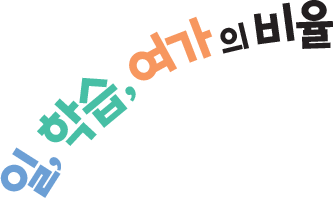
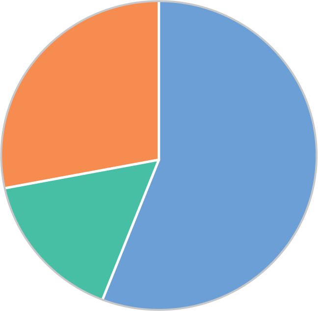

1 나의 현재 하루 일과와 직업인이 된 미래의 하루 일과를 작성해 보자.
| 현재의 나 | 시간 | 미래에 직업인이 된 나 | |
|---|---|---|---|
수면 |
오 전 |
6 |
수면
|
아침 식사 및 등교 |
7 |
출근 준비, 출근
|
|
공부 |
8 |
직장 업무
|
|
학교 공부 |
9 | ||
| 10 | |||
| 11 | |||
점심 식사 |
오 후 |
12 |
점심 식사, 독서
|
학교 공부 |
1 |
직장 업무
|
|
| 2 | |||
| 3 | |||
| 4 | |||
하교 및 저녁식사 |
5 | ||
| 6 |
저녁식사, 휴식
|
||
학원 |
7 |
독서 모임
|
|
| 8 | |||
여가 |
9 |
운동
|
|
공부 |
10 |
책 집필
|
|
| 11 | |||
| 오 전 |
12 |
수면
|
|
수면 |
1 | ||
| 2 | |||
| 3 | |||
| 4 | |||
| 5 | |||
2 미래에 직업인이 된 나의 하루 일과 중 일, 학습, 여가의 비율을 그려 보고, 서로 어떤 영향을 주고받는지 적은 후 짝과 비교해 보자.

일, 학습, 여가는 서로 어떤 영향을 주고받을까?
-
·
(일 ↔ 여가) 회사를 다니면서 얻게 된 수입으로 운동 등을 할 수 있다.
-
·
(여가 ↔ 학습) 독서 모임을 통해 새로운 사람들을 만나고 새로운 지식을 배울 수 있다.
-
·
(일 ↔ 학습) 회사를 다니면서 경험한 것들을 바탕으로 책을 집필하고 있다.

여가
학습
일
3
1에서 작성한 나의 미래의 삶에서 실현할 수 있는 가치를  에서 모두 찾고 그 이유를 적어 보자.
에서 모두 찾고 그 이유를 적어 보자.
-
안정성 -
보수 -
도전성 -
영향력 -
사회적 기여 -
일과 삶의 균형 -
즐거움 -
소속감 -
사회적 인정 -
성취 -
자기 계발 -
자율성
직장에서 일을 함으로써 흥미와 보람을 느끼고 경제적인 이익을 얻는다. 운동 등 여가 생활을 즐기며 일과 삶의 균형을 맞춘다. 독서 및 책 집필을 통해 능력을 계발하며 성취감을 느낀다.